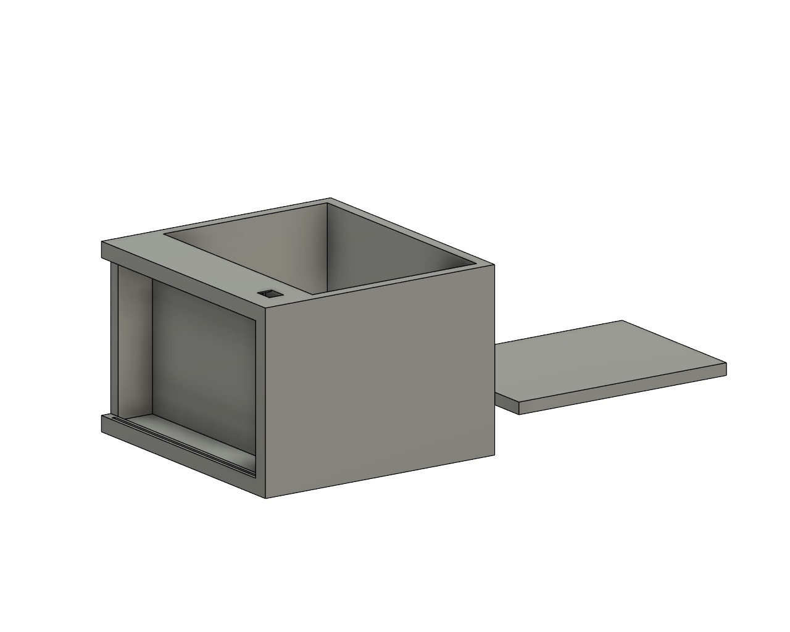

AUTOGROW
Your personal garden assistant

CHI SIAMO?
Auto Grow è un progetto nato con l'obiettivo di
rendere l'arte della semina e della cura delle piante
un'attività semplice e alla portata di tutti. Con Auto
Grow, la semina e la cura delle piante non saranno più un'attività noiosa per il semplice fatto che
il processo di irrigazione e cura del terreno è totalmente automatizzato. Non vedrai l'ora di vedere crescere le
tue piante!!
COME FUNZIONA?
Auto Grow cerca di ottimizzare l'utilizzo delle
risorse indispensabili per la fotosintesi quali acqua, luce e di rendere il processo di irrigazione il più
efficiente possibile.
Il sistema è composto da una serie di sensori che monitorano costantemente il terreno. In base a queste
informazioni, il sistema decide se e quanto irrigare.
Dal sito web, è possibile monitorare lo stato del terreno e delle piante, e modificare le impostazioni di
irrigazione.
Attraverso dei semplici comandi, è possibile attivare o disattivare l'irrigazione automatica, passando così alla
versione manuale.
Auto Grow è stata progettata ad hoc per essere
il più semplice possibile da utilizzare, in modo che tutti possano godere dei benefici di avere un giardino in
casa.
Il suo design è stato pensato per essere il più compatto possibile, in modo da poter essere posizionato in
qualsiasi ambiente.
Auto Grow nasce dall'esigenza di riuscire a
anticipare la semina delle piante aromatiche, quali il basilico, il prezzemolo, la menta, il timo e la salvia, in
modo da poterle avere a disposizione prima del periodo
primaverile. Inoltre, il sistema è stato progettato per essere il più versatile possibile, in modo da poter essere
utilizzato per qualsiasi tipo di pianta.
USI FUTURI...
In un futuro penso di espandere l'utilizzo di Auto
Grow alla mia serra personale, in modo da poter
monitorare e controllare la crescita delle piante in modo ancora più efficiente, ma sopratutto anche da lontano.
Doterò inoltre il mio orto di un tablet gestionale per poter tenere tutto sotto controllo anche da vicino e in
modo piu' pratico.